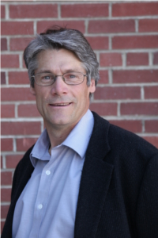

Krishan Power - Artistic Director
Krishan is an accomplished musician with significant training and experience in clarinet, voice, arranging, teaching and conducting. Earning a master's degree (2014) in Clarinet Performance from the University of British Columbia, his credentials include three years' leading and building Vocal Group Kiva. Krishan is excited to have the opportunity to work with a group of the calibre of Il Sono, and as a former Il Sono baritone, Krishan knows the ensemble, its sound, and its potential. Krishan will continue to foster excellence in male vocal singing as established by Justin Jalea and Zachary Wadsworth.

Wesley Nickel
Wes Nickel began singing as a child, while also studying violin with teachers such as Imant Raminsh. Wes attended the Canadian Mennonite Bible College, earning a Bachelor degree in Church Music, and Brandon University, earning a Bachelor of Music degree in music education. While at Brandon, Wes continued studying violin under Francis Chaplin (renowned teacher of violinist, James Ehnes). Wes has sung with the Okanagan Festival Singers, the Aura Chamber Choir Bach Choir, VoiceScapes, and Pro Coro Canada for special concerts. Other choral experiences include clinics with conductors such as Lloyd Pfaush, Robert Cooper, Robert Shaw and Elmer Iseler. Wes sings with Spiritus Chamber Choir and SuperSonic Mens' Choir, and is the bass principal with the Calgary Philharmonic Chorus.
Aaron Bartholomew
Aaron Bartholomew recently graduated from the University of Lethbridge where he majored in Vocal Performance. In May 2010, Aaron was a member of the National Youth Choir of Canada, under the direction of Dr. Victoria Meredith. In addition to Il Sono, Aaron currently sings with Spiritus Chamber Choir and the choir of the Cathedral Church of the Redeemer. Aaron also enjoys performing on the operatic stage. Past performance highlights include King Balthazzar in Amahl and the Night Visitors (Menotti) and as Antonio in The Marriage of Figaro (Mozart), both for the University of Lethbridge opera workshop under the direction of Dr. Blaine Hendsbee.
Dave Latos
Dave has sung in choir since age six. He enjoyed playing trombone in school bands, but left it behind to focus on singing. Dave completed a BMus at the University of Saskatchewan and, during his time there, performed with the Greystone Singers and Musical Theatre Ensemble. Since returning to Calgary, Dave has sung with the Festival Chorus, the Bow Valley Chorus, and the Calgary Philharmonic Chorus. He is currently enjoying studying composition at the U of C and is considering pursuing a master’s degree. Dave would like to help make the world a better place both through music and otherwise. He currently sings with Spiritus, Luminous Voices, and Il Sono and is a self-employed photographer.
Graham Fast
Graham Fast began his musical training on the piano at the age of five. Graham began singing in 2006 as a member of the Calgary Exhibition and Stampede Showband Choir. He currently sings with Knox Presbyterian Church Choir, Cum Vino Cantus Choir, and a variety of ensembles at the University of Calgary, including the University Chorus, Chamber Choir and Collegium Musicum. Along with singing, Graham also teaches proper vocal practice to new singers, because he feels it is a great learning opportunity for both his students and himself. Graham is currently pursuing a Bachelor of Music in voice performance from the University of Calgary.
Gil Barber
Gil Barber began playing brass instruments at the age of 10, including trumpet, euphonium, and trombone. He began singing in 1994, when he joined the University of Alberta Mixed Chorus (UAMC) under Dr. Robert deFrece. His love of vocal performance was strengthened during his time with UAMC, where he met his wife Megan. Since then, Gil has sung in various choirs and vocal groups, including Greenwood Singers, vocal jazz group FORM, and Edmonton a capella group Apocalypse Kow. Gil was also involved in special perfomances with the Richard Eaton Singers. Outside of music, Gil works as an environmental consultant and loves the outdoors.
Paul Newman
Paul Newman's musical background began with the french horn at age eight. He studied with David Hoyt, Martin Hackleman and Michael Wall, and played with the Edmonton Youth Orchestra for 11 years. Paul earned his Grade 11 french horn certification from the Western Board of Music, and is a winner of the provincial Kiwanis Music Festival. Paul's choral experience includes the University of Toronto Symphony Chorus and the Calgary Philharmonic Chorus. Currently, Paul sings with Spiritus Chamber Choir and SuperSonic Mens' Choir. He has also collaborated with VoiceScapes and the Vancouver Chamber Choir. Paul manages the engineering department of Alternative Fuel Systems, a Calgary-based environmental technology firm.
Boyd Hansen
Boyd Hansen began singing at age seven with the Calgary Boys Choir. He continued singing with choirs including the Lethbridge Collegiate Institute Chamber and Jazz Choirs, the University of Lethbridge Singers, Spiritus Chamber Choir, Vocal Point Chamber Choir, Strata and SuperSonic Men's Choir. He has collaborated with groups such as VoiceScapes, the Vancouver Chamber Choir, the Calgary Philharmonic Chorus and the DaCamera Singers for special projects. Boyd completed degrees in engineering and physics and is currently employed as an integrated circuit design engineer.
Bryan Hryciw
Bryan has been involved with music since age five. Educated on violin and viola, he played with string ensembles and orchestras until graduation. Concurrently, he was in choirs and concert bands through various high school and university programs. Bryan sings with Luminous Voices, Spiritus Chamber Choir and Cum Vino Cantus. Bryan holds a B.Sc. is Computer Science (Calgary) and works as a software developer.
Jamie Bertram
Jamie is an entrepreneurial musician who delights in the marriage of art and technology. He began studying singing in high school, and since then, has sung regularly with Vocalectic Male Voice A Cappella Group, Spiritus Chamber Choir, Il Sono, The Alberta Youth Choir, and Vocal Group Kiva. Jamie has also sung as a guest with The Choir of the Cathedral Church of the Redeemer in Calgary, Luminous Voices, Pro Coro Canada, and the Calgary Philharmonic Chorus. Currently, Jamie sings with Spiritus Chamber Choir, Il Sono, Vocalectic Male Voice A Cappella Group (in addition to being musical director), and Vocal Group Kiva, for which he is also the general manager. Jamie is employed as as a software developer.
Justin Jalea - Founding Director
Justin Jalea began formal music training at St. Michael's Choir School in Toronto at the age of eight. Since graduating, Justin has been a member of such choirs as the Victoria Scholars and Spiritus Chamber Choir, and professional choirs such as the Bach Festival Singers, Luminous Voices, Pro Coro Canada, and the Canadian Chamber Choir. Justin founded the Toronto-based male a cappella group The Graduates, co-founded Early Music Ensemble Sospiri in Edmonton, and from 2005-2007 was the Director of Music for St. Michael's College at the University of Toronto. Justin is the Founding Artistic Director of Double Treble Women's Vocal Ensemble and Il Sono Men's Vocal Ensemble in Calgary. Justin was awarded the John Arab Memorial Scholarship from St. Michael's Choir School upon graduation, and is a two-time recipient of the Ellen Battell Stoeckel Scholarship from Yale University's School of Music. Justin completed his B.A. at the University of Toronto and his M.A. at the University of Alberta, both in philosophy. From 2011-2013, Justin taught in the Department of General Education at Mount Royal University, and currently continues his research on the intersection of human rights and civil liberties - in particular, religion and society, public dialogue, gender equality, and freedom of religious expression.